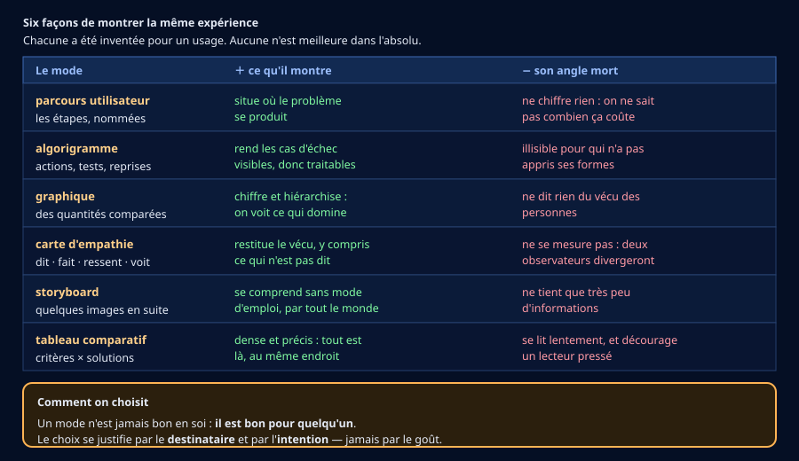
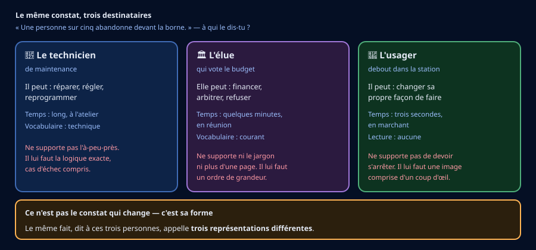
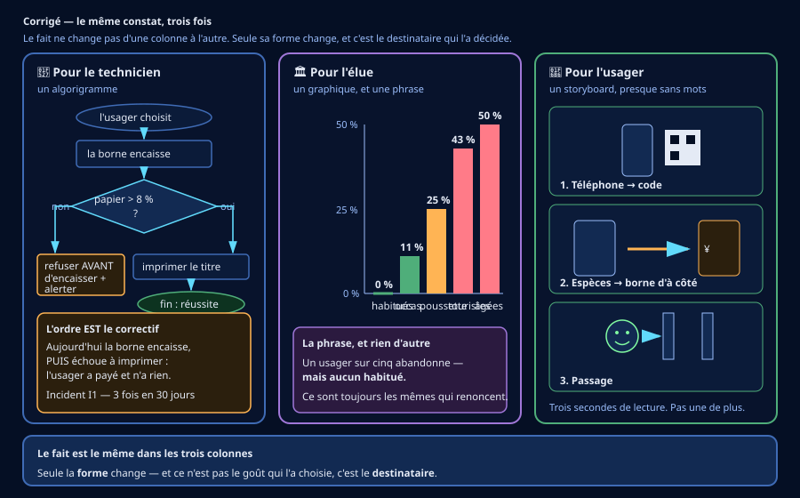
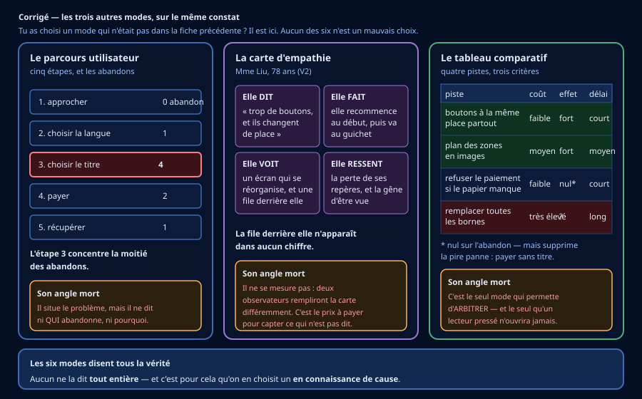

🎫 Billet d'entrée — je vérifie mes outils de 4e (5 min, sans note)
Trois questions sur ce que tu as travaillé l'an dernier. Aucune note : c'est un aiguillage.
🎒 Je révise en 3 minutes
Une moyenne décrit le milieu d'une série. Sur un groupe varié, elle peut ne correspondre à personne : si la moitié met 40 s et l'autre 120 s, la moyenne est 80 s — et personne ne met 80 s.
Dans un algorigramme : ovale pour le début et la fin, rectangle pour une action, losange pour un test. Un test a deux sorties, et la branche « non » doit mener quelque part — sinon l'usager tourne en boucle.
Une exigence dit ce qu'il faut obtenir, pas comment : « rester lisible sous la pluie » est une exigence, « mettre un auvent » est une solution.
🔍 Activité 1 — Ce que le chiffre ne dit pas (~40 min)
Le rapport dit : « un usager sur cinq abandonne ». Le fichier
observations_borne_pekin_simulees.csv contient les 40 observations qui ont
produit ce chiffre : profil, durée totale, abandon, étape d'abandon.
Avant de choisir comment montrer quelque chose, il faut savoir quoi montrer.
a) Lire un chiffre agrégé
b) Ta lecture des données
🪜 Version étayée — des phrases à compléter
- « habitués : ____ % (___ abandons sur 14) »
- « occasionnels : ____ % » · « touristes : ____ % »
- « personnes âgées : ____ % » · « avec poussette : ____ % »
- « Le chiffre global cachait que ____, alors que ____. »
💡 Aide de niveau 1
Au tableur : filtre la colonne profil, compte les lignes où
abandon vaut oui, divise par l'effectif du profil. Arrondis à
l'entier.
💡💡 Aide de niveau 2
Range tes cinq taux du plus petit au plus grand. L'écart entre le premier et le dernier est ce que le chiffre global avait effacé — et c'est lui, la vraie information.
La phrase attendue ne dit pas seulement « ça dépend des profils ». Elle nomme qui abandonne, et qui n'abandonne jamais.
📖 Correction complète
Les cinq taux : habitués 0 % (0 sur 14) · occasionnels 11 % (1 sur 9) · avec poussette 25 % (1 sur 4) · touristes 43 % (3 sur 7) · personnes âgées 50 % (3 sur 6).
Total : 8 abandons sur 40, soit 20 % — « un sur cinq ». Le chiffre global est exact.
Ce qu'il cachait : aucun habitué n'abandonne, tandis qu'une personne âgée sur deux et près d'un touriste sur deux renoncent. Ce ne sont pas « 20 % des usagers » qui échouent au hasard : ce sont toujours les mêmes.
La durée moyenne dit la même chose autrement : 77 s en moyenne, quand l'habitué met 41 s et la personne âgée 123 s. Personne ne met 77 secondes. Une moyenne sur une population variée décrit une personne qui n'existe pas.
Sur la réponse du service technique : elle est vraie. Aucune borne n'est en panne. Mais on ne lui parle pas de pannes — on lui parle d'usages. Un objet peut fonctionner parfaitement et échouer à rendre son service : c'est ce que tu avais déjà vu en 5e à Shenzhen, et en 4e à Hangzhou. Le voir une troisième fois, sur un autre objet, n'est pas une répétition : c'est la confirmation que ce n'est pas un accident.
🧠 À retenir : un chiffre agrégé peut être exact et inutilisable. Avant de le montrer, demande-toi ce qu'il additionne.
⚠️ Piège classique : conclure « 20 % des gens n'y arrivent pas ». Non : 0 % des habitués et 50 % des personnes âgées. Ce n'est pas la même phrase, et elle n'appelle pas les mêmes décisions.
Critère de réussite : tes cinq taux sont justes et ta phrase nomme à la fois ceux qui abandonnent et ceux qui n'abandonnent jamais.
🎯 Activité 2 — Six modes, trois destinataires (~35 min)
Tu sais maintenant quoi montrer. Reste le plus difficile : comment, et surtout à qui.


a) D'abord, savoir de quoi on parle
Six mots, dont plusieurs sont sans doute nouveaux pour toi. On ne choisit pas parmi des mots qu'on ne connaît pas : commence par les relier à ce qu'ils désignent.
b) Éliminer avant de choisir
c) Ce qui fait une bonne justification
d) Tes trois appariements
🪜 Version étayée — des phrases à compléter
- « Pour le technicien, je choisis ____, parce qu'il ____ (point fort). Son angle mort — ____ — ne le gêne pas, car ____. »
- « Pour l'élue, je choisis ____, parce qu'il ____. Son angle mort — ____ — ne la gêne pas, car ____. »
- « Pour l'usager, je choisis ____, parce qu'il ____. Son angle mort — ____ — ne le gêne pas, car ____. »
💡 Aide de niveau 1
Procède par élimination, pas par préférence. Pour chaque destinataire, relis la ligne « ne supporte pas » et barre les modes qui s'y heurtent. Il en restera peu.
💡💡 Aide de niveau 2
D'autres appariements que ceux du corrigé sont recevables — ce n'est pas une devinette. Ce qui est exigé, c'est que la justification tienne : point fort utile à cette personne, angle mort sans conséquence pour elle.
Exemple d'une justification qui ne tient pas : « pour l'élue, le tableau comparatif, parce qu'il contient tout ». C'est vrai — et c'est précisément son défaut ici : elle a quelques minutes.
📖 Correction complète
Un appariement possible — d'autres se défendent :
- Technicien → algorigramme. Point fort : il rend les cas d'échec visibles, donc traitables — c'est exactement ce qu'il doit réparer. Angle mort : illisible pour un non-technicien — sans conséquence, il en est un.
- Élue → graphique (une seule phrase à côté). Point fort : il chiffre et hiérarchise en un coup d'œil. Angle mort : il ne dit rien du vécu — sans conséquence ici, car elle ne décide pas d'un geste mais d'un budget.
- Usager → storyboard. Point fort : il se comprend sans mode d'emploi, quelle que soit la langue. Angle mort : il ne tient presque rien — sans conséquence, l'usager n'a que trois secondes de toute façon.
Ce qui rendrait un appariement faux : le tableau comparatif pour l'usager (il se lit lentement), l'algorigramme pour l'élue (elle n'a pas appris les formes), la carte d'empathie seule pour le technicien (elle ne donne aucune logique à corriger).
Sur les justifications. « C'est plus visuel », « c'est plus clair », « c'est plus professionnel » ne sont pas des justifications : elles vaudraient pour n'importe quel destinataire, donc elles n'en désignent aucun. Une justification qui marche pour tout le monde ne justifie rien.
Et si tu as choisi un mode pour deux destinataires différents : c'est possible, mais tu dois alors dire ce que tu changes de l'un à l'autre.
🧠 À retenir : un mode n'est jamais bon en soi — il est bon pour quelqu'un. On le justifie par son angle mort, pas par son point fort.
⚠️ Piège classique : choisir le mode qu'on préfère, ou celui qu'on sait le mieux faire, et fabriquer la justification après.
🔀 Activité 3 — L'incident que seul un algorigramme montre (~30 min)
Le relevé de maintenance (incidents_maintenance_pekin_simules.csv) contient trois
incidents. Le premier est le plus grave, et il n'a rien d'une pièce cassée :
I1 — le rouleau de papier se bloque sous 8 % de papier restant. La borne encaisse le paiement, puis échoue à imprimer. L'usager a payé et n'a pas de titre.
Ce n'est pas l'organe qui est fautif : c'est l'ordre des opérations. Et l'ordre des opérations, aucun graphique ni aucun storyboard ne le montre.
Ton algorigramme
🪜 Version étayée — des phrases à compléter
- « DÉBUT — l'usager a choisi son titre »
- « TEST : ____ ? — si NON : ____ puis FIN (échec) »
- « ACTION : ____ »
- « TEST : ____ ? — si NON : ____ »
- « ACTION : imprimer le titre »
- « FIN (réussite) : ____ »
💡 Aide de niveau 1
Écris d'abord la suite des actions telle qu'elle se passe aujourd'hui. Puis demande-toi à quel endroit exact il faut déplacer le test du papier.
💡💡 Aide de niveau 2
Le principe général : on ne prend jamais l'argent d'un usager avant d'être sûr de pouvoir le servir. Tous les tests qui conditionnent le service se placent avant l'encaissement.
Et n'oublie pas la fin en échec : une borne qui se sait incapable de servir doit le dire et prévenir, pas attendre le prochain client.
📖 Correction complète — avec l'algorigramme attendu

L'algorigramme attendu :
- DÉBUT — l'usager a choisi son titre.
- TEST — « reste-t-il plus de 8 % de papier ? » Si non → afficher « borne indisponible », alerter la maintenance, FIN (échec) — sans avoir pris un centime.
- ACTION — la borne encaisse.
- TEST — « le paiement a-t-il abouti ? » Si non → restituer et revenir au choix.
- ACTION — imprimer le titre.
- FIN (réussite) — l'usager prend son titre.
Tout tient dans l'ordre. Le test existait déjà dans la borne actuelle : il était simplement après l'encaissement. Déplacer une case ne coûte rien en matériel et supprime la pire panne du relevé — celle où l'usager paie et n'a rien.
La fin en échec n'est pas un détail. Une borne qui se sait incapable de servir doit le dire et prévenir. Sans cette branche, elle attend le client suivant pour échouer à nouveau — trois fois en trente jours, c'est exactement ce qui s'est passé.
🧠 À retenir : on ne prend jamais l'argent d'un usager avant d'être sûr de pouvoir le servir. Un défaut d'ordre ne se voit que sur un algorigramme.
⚠️ Piège classique : corriger l'organe — « changer le rouleau plus souvent » — au lieu de corriger l'ordre. Le rouleau finira toujours par manquer.
✍️ Activité 4 — Produire, et défendre (~30 min)
Tu as produit l'algorigramme du technicien. Il reste l'élue et l'usager. Choisis-en un, et produis pour lui la représentation que tu as retenue à l'activité 2.
Ta production, et sa défense
🪜 Version étayée — des phrases à compléter
- « Pour qui : j'ai produit pour ____, qui peut ____ et qui dispose de ____. »
- « Quel mode : j'ai choisi ____, parce qu'il ____, et c'est ce dont cette personne a besoin pour ____. »
- « Ce que j'ai laissé de côté : je n'ai pas montré ____, parce que ____ ne lui servirait pas / lui prendrait un temps qu'elle n'a pas. »
💡 Aide de niveau 1
Commence par le troisième point. Décider ce qu'on enlève est plus rapide que décider ce qu'on met — et c'est ce qui donne sa forme au reste.
💡💡 Aide de niveau 2
Le troisième point est le plus important des trois, et le plus rarement écrit. Une représentation est un choix de ce qu'on montre, donc aussi de ce qu'on cache. Un auteur qui ne sait pas dire ce qu'il a écarté n'a pas choisi : il a mis tout ce qu'il pouvait.
📖 Corrigé — les six modes traités
Quel que soit le mode que tu as choisi, tu trouveras ci-dessous un modèle dans la forme que tu as produite. Compare la structure, pas les mots : ta version peut être très différente et tout aussi juste.

Trois défenses possibles, une par destinataire :
- Élue, graphique. Elle décide d'un budget en quelques minutes : elle a besoin d'un ordre de grandeur et d'une comparaison, pas d'une explication technique. Laissé de côté : la cause des abandons — elle ne la corrigera pas elle-même.
- Usager, storyboard. Trois secondes debout : il faut une image comprise d'un coup d'œil, sans langue. Laissé de côté : tous les chiffres — ils ne l'aideraient pas à passer le portique.
- Élue, tableau comparatif. Défendable aussi ! Si elle doit arbitrer entre plusieurs pistes, c'est le seul mode qui le permette. Laissé de côté : le vécu des usagers — et il faut assumer que ce tableau ne sera pas lu en trois minutes.
Ce qui rend une défense faible : ne pas nommer le destinataire, justifier par le goût (« c'est plus clair »), ou ne rien avoir laissé de côté. Ce dernier cas est le plus fréquent : mettre tout ce qu'on a, ce n'est pas représenter — c'est déverser.
🧠 À retenir : représenter, c'est choisir ce qu'on montre, donc aussi ce qu'on cache. Savoir dire ce qu'on a écarté est la preuve qu'on a choisi.
Critère de réussite : ta défense nomme le destinataire, le mode et sa raison, et ce que tu as volontairement laissé de côté.
🪞 Mon bilan personnel (~10 min)
💭 Rappel de ton hypothèse de départ :
🪜 Version étayée — des phrases à compléter
- « Au départ, j'avais dit que j'expliquerais avec ____. »
- « Je n'avais pas demandé ____. »
- « Maintenant, je commencerais par ____. »
🪜 Version étayée — des phrases à compléter
- « J'ai appris qu'un chiffre global ____. »
- « J'ai appris qu'un mode de représentation ____. »
- « J'ai appris que représenter, c'est aussi ____. »
🪜 Version étayée — des phrases à compléter
- « Je dois encore revoir ____, parce que ____. »
- « Ce que je n'arrive pas encore à faire seul·e : ____. »
Je me positionne
🧠 Prêt·e à t'entraîner ?
Le QCM de la séquence compte 30 questions, dont 5 illustrées, et chaque réponse fausse y est expliquée. La séquence ne portant qu'un seul code, elles portent toutes sur 3e_C2.1.
🎁 Bonus (facultatif — hors parcours obligatoire)
1. Prends un objet du collège que tout le monde utilise — le portail, la sonnerie, le distributeur, le tableau d'affichage. Observe dix personnes et note qui réussit du premier coup et qui non. Y a-t-il un profil qui échoue plus que les autres ?
2. Choisis un destinataire réel — le principal, l'agent d'entretien, un camarade de 6e — et produis pour lui une représentation de ce que tu as observé.
3. Montre-la à cette personne, sans rien expliquer. Regarde combien de temps elle met à comprendre, et ce qu'elle te demande ensuite. Ce qu'elle demande est ce que tu avais oublié.
📖 Corrigé du Bonus — un exemple entièrement traité
L'objet pris ici : le portail d'entrée à badge. Ton objet sera différent ; c'est la démarche qui doit se ressembler.
1. Dix personnes observées (réussite du premier coup) :
- 4 élèves de 3e : 4 réussites — badge sorti avant d'arriver, geste automatique ;
- 3 élèves de 6e : 1 réussite — les deux autres présentent le badge à plat, alors que le lecteur est vertical ;
- 2 adultes visiteurs : 0 réussite — ils cherchent une sonnette ;
- 1 agent avec un chariot : 0 réussite — il n'a pas de main libre.
Le profil qui échoue : ceux qui viennent rarement, et ceux qui ont les mains prises. Exactement comme à Pékin : les habitués ne rencontrent aucun problème, et c'est pour ça que le problème reste invisible — ceux qui décident sont presque toujours des habitués.
2. Le destinataire retenu : un camarade de 6e, parce que c'est lui qui échoue le plus et lui qui peut changer son geste tout de suite.
Le mode : un storyboard de deux vignettes, affiché près du portail. Vignette 1 : une main tenant le badge à la verticale, face au lecteur, avec une coche verte. Vignette 2 : le même badge à plat, avec une croix rouge. Aucun texte.
Ce que j'ai laissé de côté : les chiffres (un 6e ne veut pas savoir que 2 sur 3 échouent), et le cas de l'agent au chariot — il ne relève pas du même remède, il faudrait un bouton d'ouverture au coude.
3. Le test auprès d'un vrai 6e. Il a compris en deux secondes — puis il a demandé : « et si ça marche pas quand même ? »
C'est ce qu'on avait oublié : le cas d'échec. Exactement la branche « non » d'un test, celle que l'activité 3 t'a appris à ne jamais laisser vide. Il faudrait donc une troisième vignette : si la lumière reste rouge, va à l'accueil.